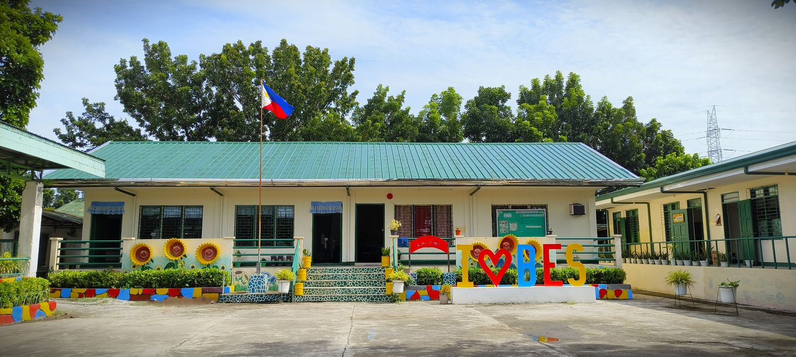
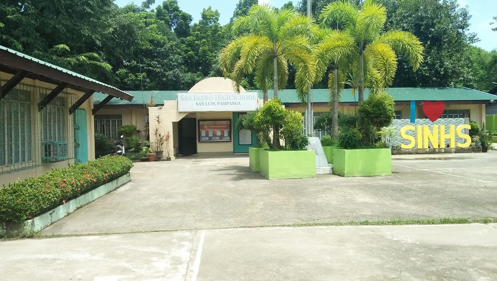
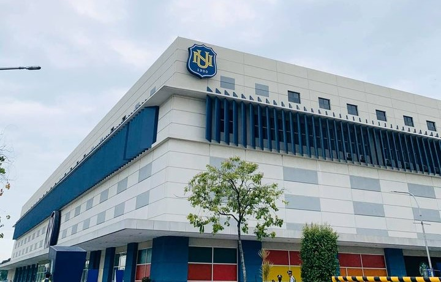

Lawrence Cunanan
My Autobiography
Journey through life with resilience, shaping meaningful experiences and cherished memories.
About
Born on August 3, 2004, in Barit, Candaba, Pampanga, Philippines. As the third of four siblings, I grew up surrounded by the warmth of family and the values of love and togetherness. Raised in a simple Filipino household, I learned early on the importance of resilience and sticking together through life's ups and downs.
With the motto "que sera, sera" ("whatever will be, will be"), I approach life with optimism and acceptance, ready to embrace whatever comes my way. Now at 19, I'm eager to step into adulthood and pursue my dreams with determination and enthusiasm.
As I continue my journey, I strive to make my family proud and contribute positively to my community. With gratitude in my heart and a spirit of adventure, I look forward to the adventures and challenges that lie ahead.
Hobbies
- Watching
- Playing
- Cleaning
Education
-

Barit Elementary School
It was not only a place of learning but also where I formed lasting friendships and felt at home, thanks to its proximity to our place. My time at Barit Elementary School laid the groundwork for my academic journey and instilled in me a lifelong love for learning.
-

San Isidro National High School
I thrived as a student, gaining invaluable knowledge and life experiences. It was here that I met my first girlfriend, marking a milestone in my personal journey. San Isidro National High School provided the fertile ground for me to expand my horizons and lay the foundation for future endeavors.
-

Baliuag University
I delved into research and explored diverse subjects within the General Academic Strand (GAS). Uncertain of my college path, GAS provided a platform for academic exploration. Achieving the 'Deans List' award highlighted my dedication to excellence. Baliuag University nurtured my curiosity and laid the groundwork for my future endeavors.
-

National University
I pursued a Bachelor of Science in Information Technology with a specialization in Mobile and Web Application, marking the beginning of my journey into the world of technology. Despite initial challenges in programming during my first year, I persevered, immersing myself in online tutorials and expanding my knowledge of various programming languages and techniques.
Course Journey: Embracing Challenges, Seeking Growth
Despite starting with limited experience, my dedication to continuous learning and experimentation led to small commissions and propelled me towards my main focus today: building responsive and stylish web and mobile apps.
Technologies
- Java
- C#
- PHP
- Javascript
- MYSQL
- Tailwind CSS
- Bootstrap
Achievements
| Year | Type |
|---|---|
| 2020-2022 | Dean's List |
| 2023-2024 | Top 10 performing students (programming subjects only) |
| iNUvation | |
| Dean's List | |
| 2024 | Beautiful gf |